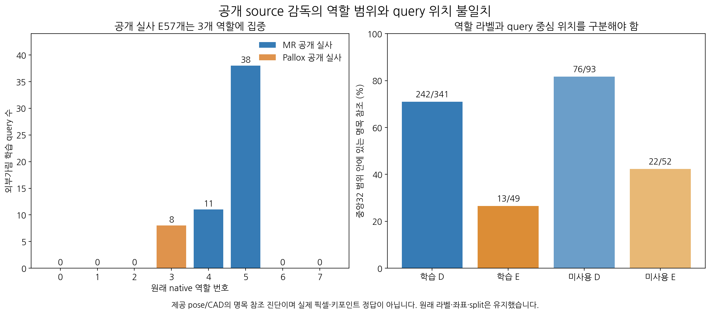
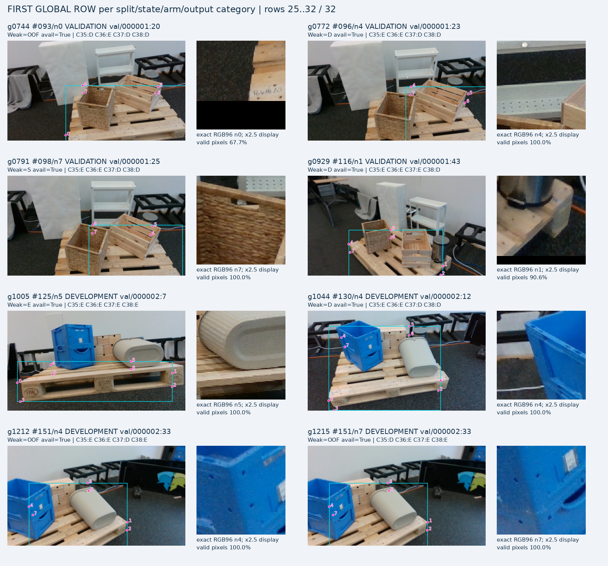
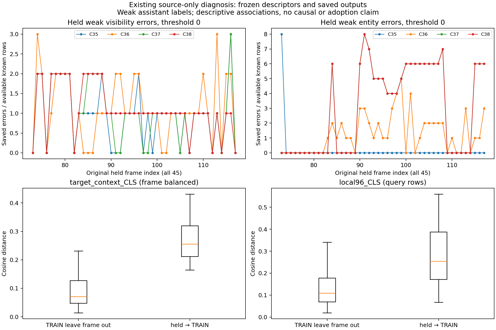
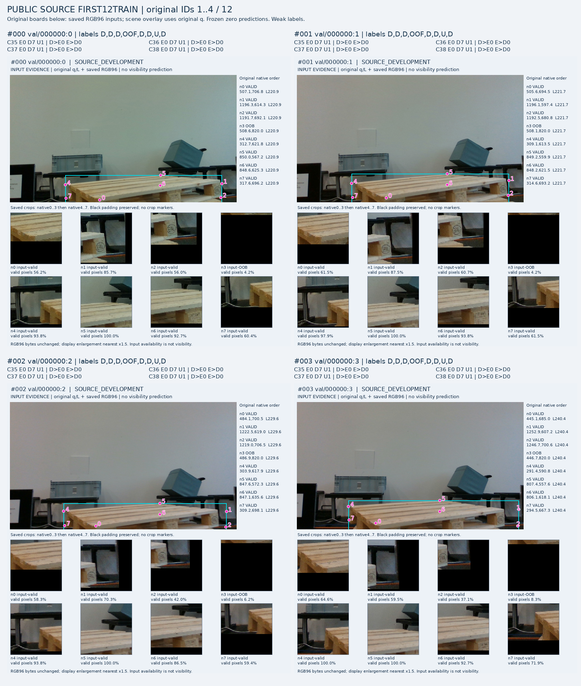
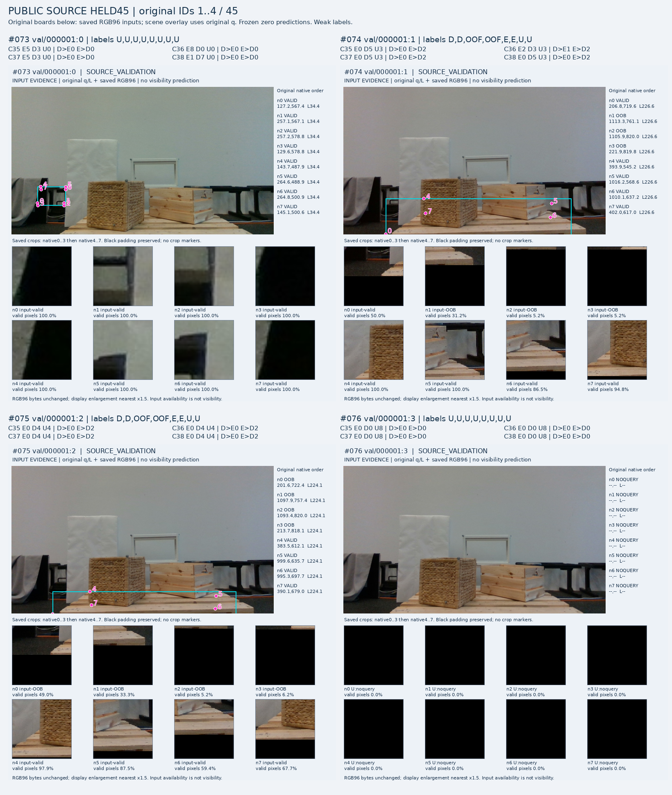

V157 source 진단 완료 · 전체 목표 미해결 · 새 모델/학습/실사223 접근0
공개 source에서 실제 전이 차이와 query/역할 라벨의 목표 차이를 함께 확인했습니다. 한 원인으로 확정하거나 새 모델 성공으로 해석하지 않습니다.

공개 실사 TRAIN 가림 감독57개는 native3/4/5에만 있습니다. MR의49개는 회색통23·파란KLT8·회색상자/흰포장블록18개이고, held52개는 바구니28·슬랫목재상자24개입니다. held도native4/5라서 역할 부족만으로 실패를 설명하지는 않습니다.
명목참조가 중앙32 범위 안에 있는 MR TRAIN은 D242/341·E13/49입니다. 원래q와 같은-native 제공pose/CAD 사이의 거리 진단이며, 실제 위치의 정확한 정답이 아닙니다. 원래 라벨을 변경하거나 표본을 걸러내지 않았습니다.
TRAIN g1044/native4는 역할D지만 원query=(242.44,192.67), 명목ref=(243.68,290.36), L201.22이며 q주변에는파란상자가보입니다. 기존역할D는밖으로노출된목재deck의구조적보임을의미했고 정확한query위치정답은아닙니다. 따라서D라벨을중심픽셀팔레트존재정답으로복사하면안됩니다.

g1044는 왼쪽 팔레트 역할의 구조적 보임과, 파란 상자 위에 놓인 초기q의 상태를 구분해야 하는 TRAIN 사례입니다. 다른 사례도 원래D/E/S/OOF/U를 그대로 표시했습니다.저장된 C37/C38은 TRAIN의 약한 D/E390개를 모두 맞췄지만 held에서는145개 중46/50개를 틀렸습니다. Local96 특징에서 같은 E TRAIN 예가 더 가까운 경우는 TRAIN48/49와 held2/52였습니다. 중앙32에서는41/49와1/52였습니다. 이는 기존 특징·라벨의 관측이며 새 분류기를 학습한 결과나 인과 증명이 아닙니다.
같은 frame의D/E295쌍은 target-context 특징이 같았습니다. query-specific 입력이 필요한 이유를 보여 주지만, 현모델에query입력이 없다는 뜻은 아닙니다. context의 nearest-class tie를E부재로 해석하지 않았습니다.



선택 규칙은 이미지 읽기 전에 봉인했습니다. 전체held45와 첫TRAIN12, 규칙으로 추가된6프레임을 확인했습니다. LOCAL96은 실제 저장된 원본 입력이고, context는 원RGB에q를 표시한 그림이며 target224 encoder tensor와는 구분합니다.
원래 TRAIN D341/E49의390개 q를 옮기지 않고, 중심 주변이 대상팔레트·외부물체·배경·미확정 중 무엇인지 별도 약한 관찰 sidecar에 기록합니다. 기존 native역할D/E와 분리하고, 경계·같은목재의소유개체모호함은UNKNOWN으로 남깁니다. 이 기록을 새 위치정답이나 외부가림정답으로 자동 승격하지 않습니다.
확실한 visible-support가 있는 경우에만 원래q에서 before/cover/adjacent 대조의 구성 가능성을 확인합니다. query픽셀을 덮었다는 이유만으로 native전체가림E를 만들지 않습니다. 새fit과 모델변경은 아직 시작하지 않았습니다.
원래목표인WOOD/SQUARE/native8 외부가림 판단을 유지합니다. 자기 가림은상위기하범위로남기고PnP·q/L·xy를수정하지않습니다. current223과기존held45를학습에편입하지않으며모델채택은없습니다.